The Dynamic Action Button — a persistent, context-aware Copilot entry point inside Word, Excel, PowerPoint and PDF previewers, the most-visited surface in M365 mobile.
~2% → ~15%
Copilot engagement in document previewers
1
Pattern, every document previewer
Role
Senior Product Designer
Surfaces
Word · Excel · PowerPoint · PDF
Scope
UX Strategy · Interaction Model · System Scaling
Platform
M365 Copilot Mobile
01 / The Problem
Copilot was buried. Users consumed documents, but never used the AI beside them.
The previewer was the most-visited surface in M365 mobile — and the one with the lowest AI engagement. The intelligence was there; the bridge to it wasn't.
"The question wasn't 'how do we add AI to previewers?' — it was 'how do we make Copilot feel like it was always supposed to be here?'"
Many surfaces. Zero consistency.
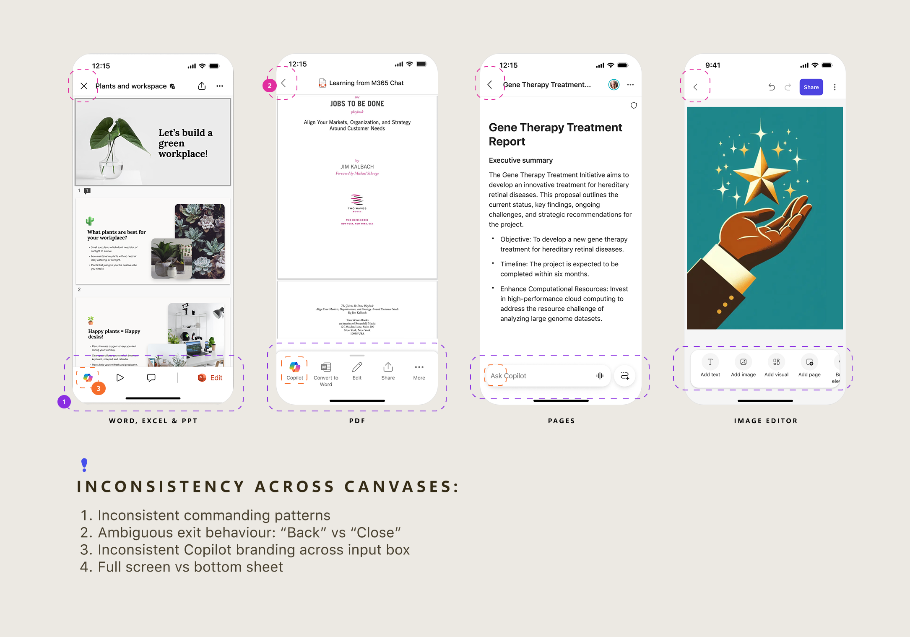
02 / The Insight
Evolve Copilot from "a button you tap" to "a dynamic action surface."
That became the Dynamic Action Button (DAB) — a persistent, adaptive layer blending Copilot and native app actions into one always-present button at the bottom of every previewer. It had to flex across two very different content models:
Established
Files created outside AI — docs, sheets, decks, PDFs. Users come to read or edit; AI is a layer on top.
Word · Excel · PowerPoint · PDF
Model-forward
Content generated and refined by AI — images, Pages, emerging formats where AI is central.
Images · Pages · AI-generated outputs
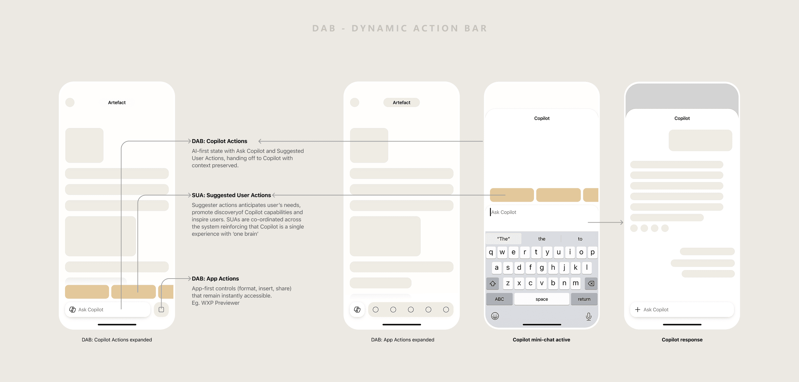
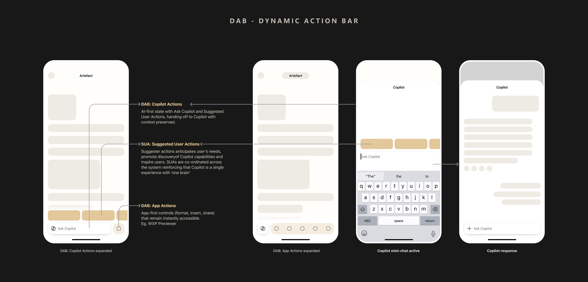
03 / The Design
A system, not a screen.
Every decision was filtered through mobile constraints and one goal: consistency across surfaces.
01
Consistent placement
DAB anchors to the same spot across every previewer. Predictability is a feature.
02
Dual action states
Copilot and app actions share one surface — AI actions lead, native actions support.
03
Context stays intact
Copilot responses open in a half-sheet — users never lose sight of the document.
04
Designed for small screens
No cluttered toolbars, no disruptive mode switches. DAB stays visible without getting in the way.
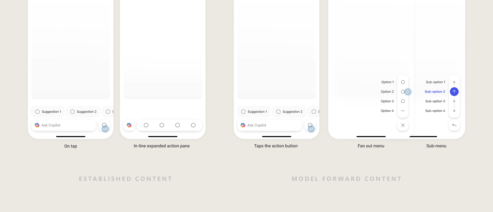
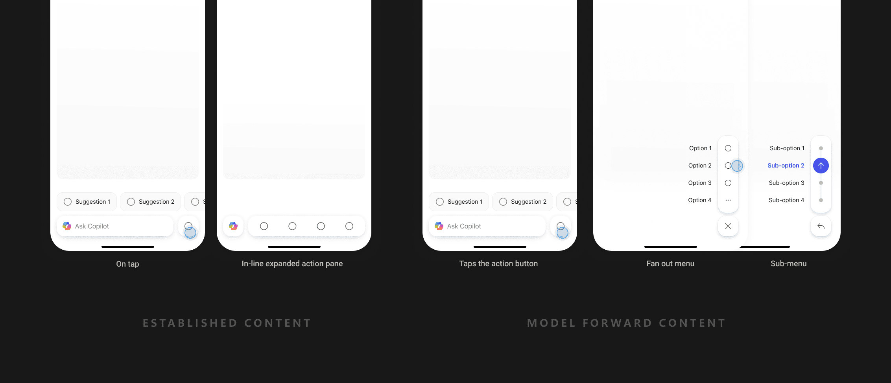
In Practice
One pattern, every previewer.
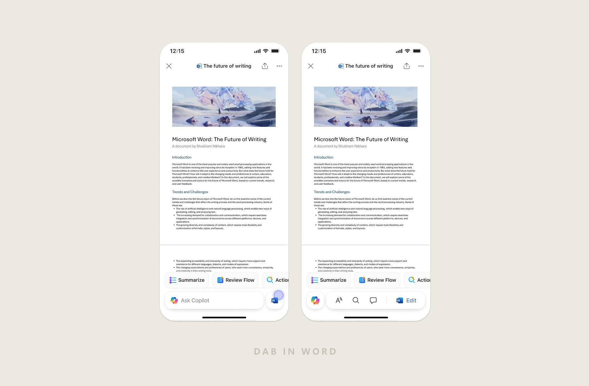
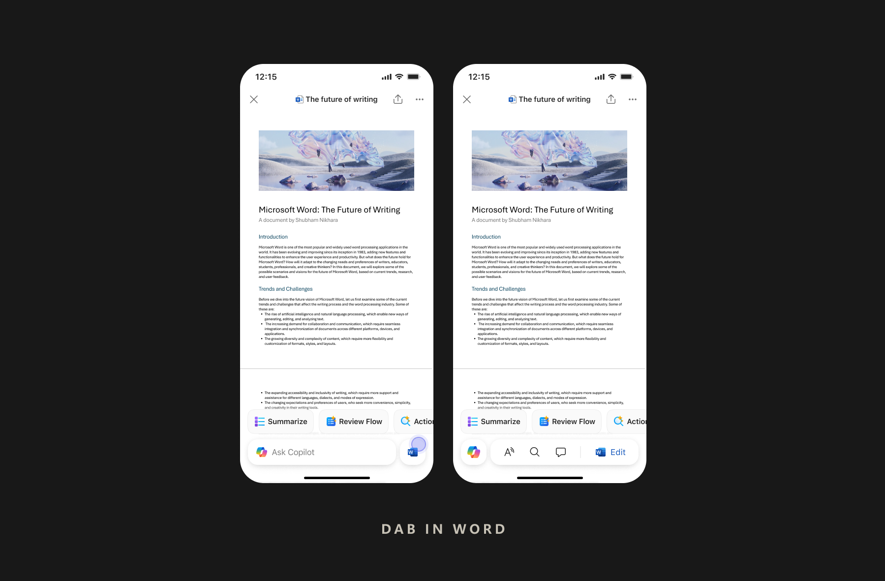
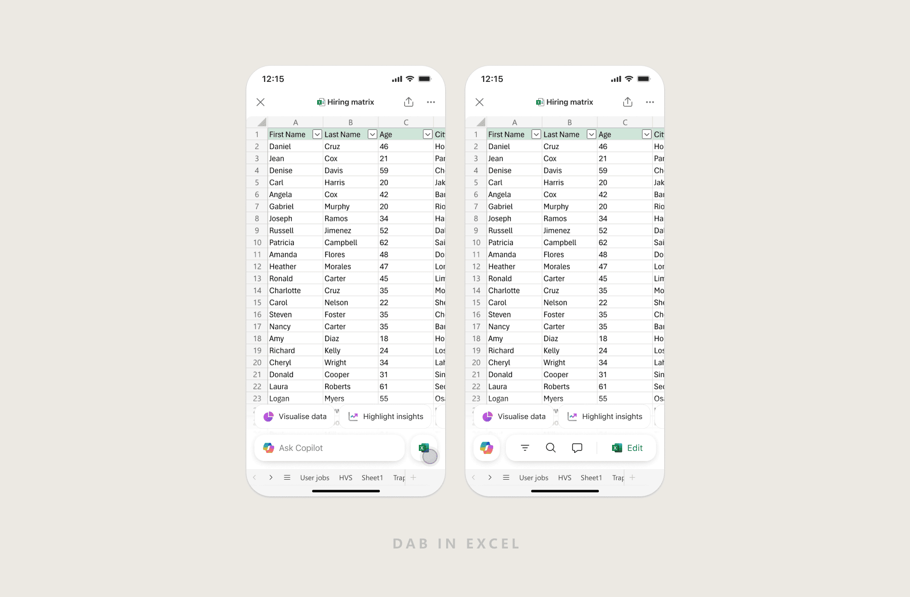
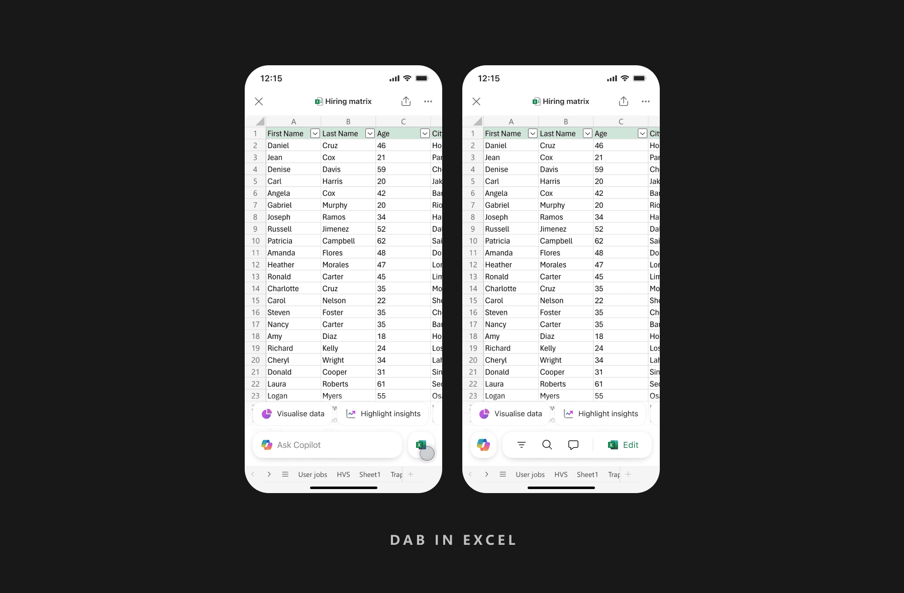
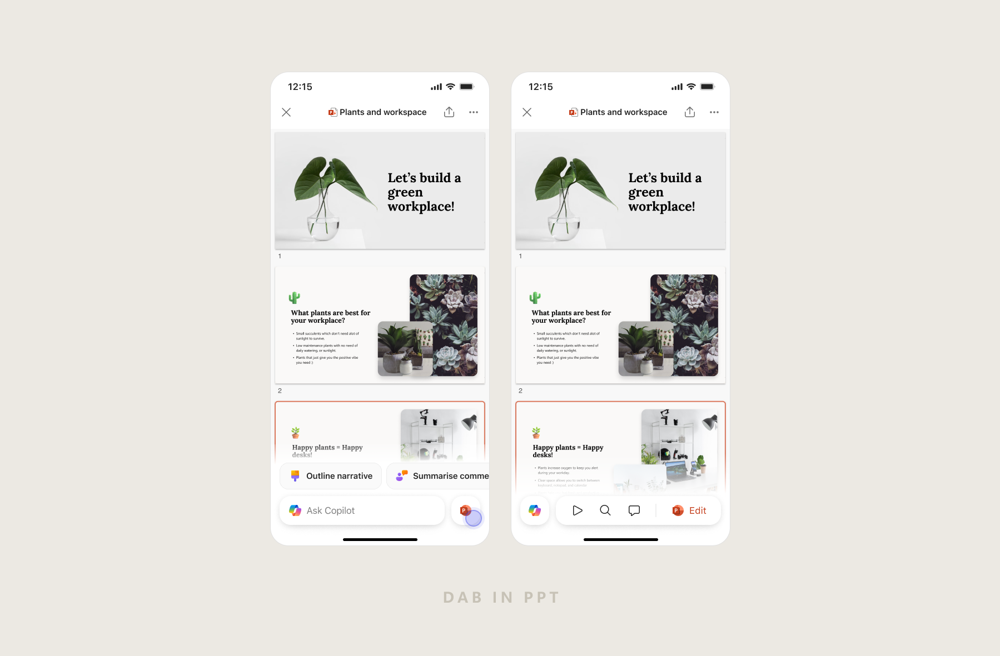
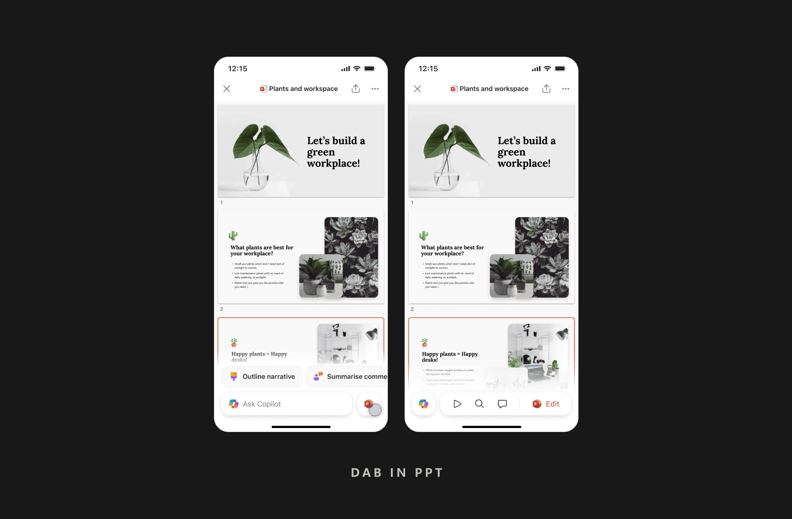
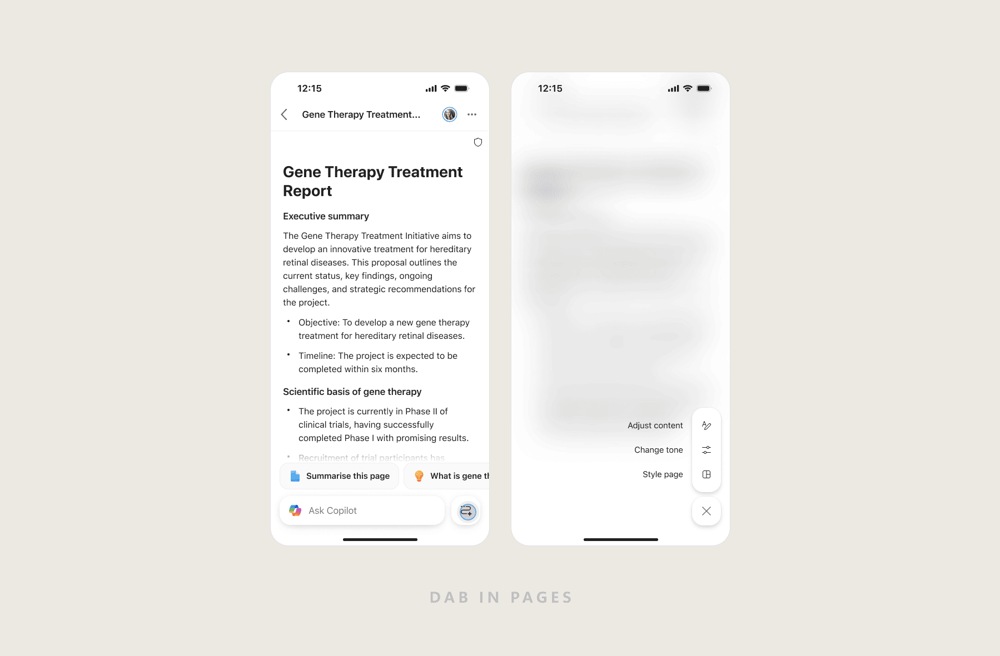
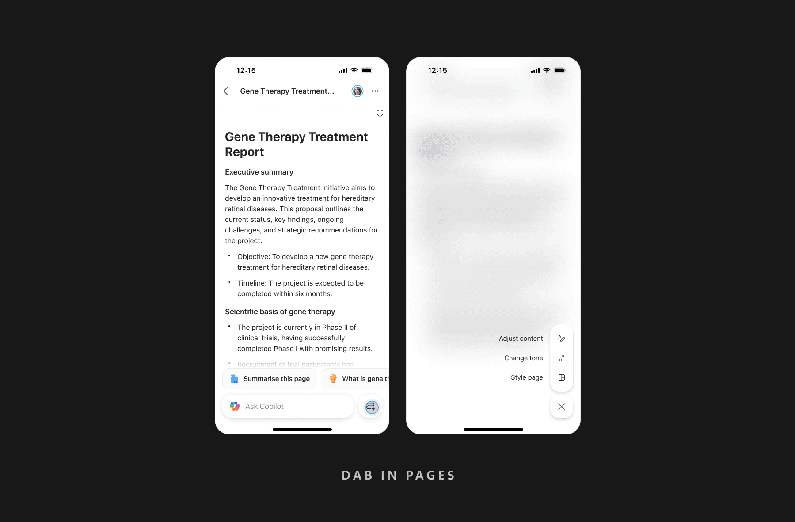
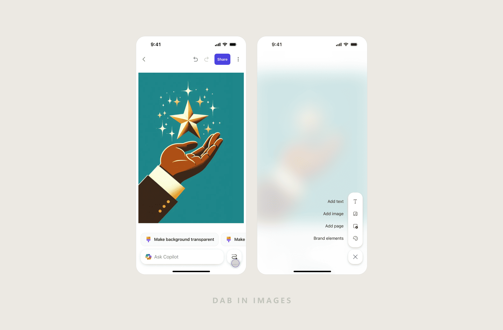
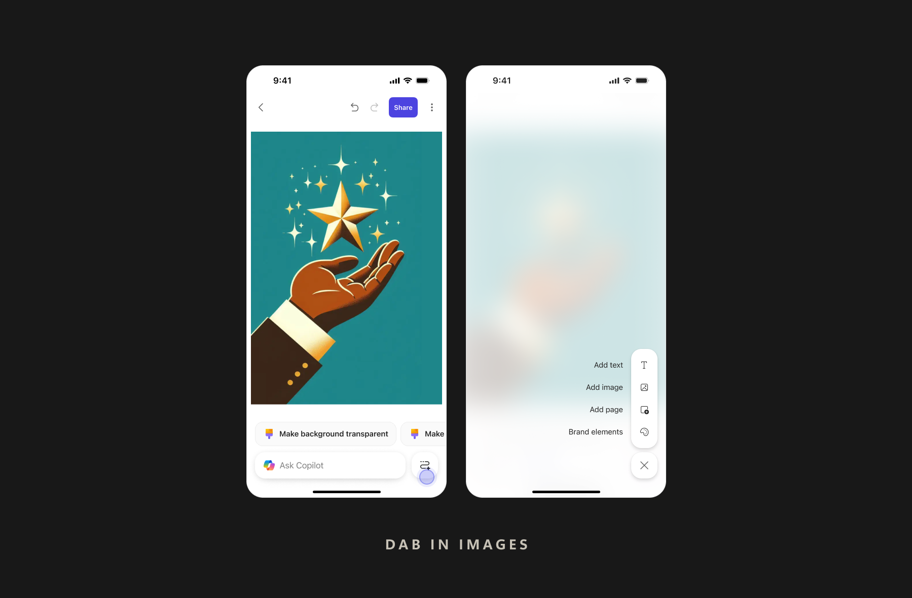
End to End
DAB in previewer — end to end.
From opening a file to acting on AI output — DAB stays present, useful, and out of the way.
04 / Impact
Previewers became Copilot's highest-intent entry point.
~2%
Copilot engagement in WXP previewers before DAB
~15%
Copilot engagement in WXP previewers after DAB adoption
The Dynamic Action Button is now the standard for how Copilot surfaces inside document-centric experiences across M365 mobile — a pattern designed once, deployed across hundreds of millions of installs.
05 / My Role
Sole designer, end to end.
Strategy & scope
Set direction and pressure-tested the spec with the PM.
Research & data
Grounded every decision in usage data, not assumptions.
Interaction model
Designed the DAB system and its action hierarchy.
System scaling
Extended one pattern across Word, Excel, PPT & PDF.
Leadership reviews
Presented at milestones; defended rationale to senior leaders.
Impact tracking
Read live engagement metrics weekly to validate and iterate.